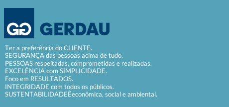
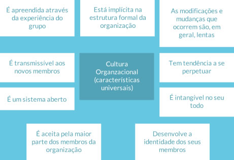
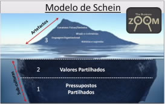
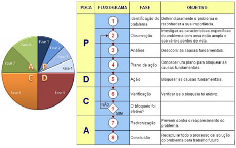
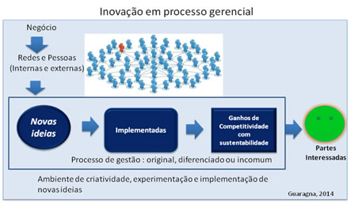

Este é o conteúdo do primeiro tema do programa Educando Líderes para Resultados.
Aqui você vai poder interagir com os materiais e, no Ambiente
Virtual de Aprendizagem MOODLE, participar do Fórum e Quiz, ambas atividades de avaliação.
Você pode navergar pelo conteúdo através das setas de navegação ou pelo menu acima.
Entender a formação do ambiente organizacional de excelência, o papel das principais lideranças, seus principais desafios e ações na busca da excelência e da competitividade.
Psicóloga, Especialista em Administração de Recursos Humanos pela FDRH/PUCRS, com formação em Coach Executivo e Empresarial pela ABRACEM, Coordenadora em Dinâmica dos Grupos, pela SBDG, Mediadora de Conflitos, pela CLIP, Analista de Predictive Index, qualificada para utilização do DISC® e do instrumento de Indicador de Personalidade - MBTI® - MYERS BRIGGS TYPE INDICATOR®. Diretora da SK & Associados Ltda, com experiência em Carreira, Desenvolvimento, Planejamento Sucessório e Coach.
O critério liderança está baseado no fundamento da excelência ¨Liderança e Constância de Propósito¨, que significa: Atuação dos líderes de forma aberta, democrática, inspiradora e motivadora das pessoas, visando ao desenvolvimento ininterrupto da cultura da excelência, à promoção de relações de qualidade e à proteção dos interesses das partes envolvidas.
Liderança, geralmente é associada à figura do líder, superestimando-se o valor de uma única pessoa, deturpando o conceito, uma vez que, na verdade, o que torna uma organização excelente é a existência de um sistema de liderança, ou seja, a maneira como os líderes se articulam para a tomada de decisão e mobilizam a força de trabalho para que consiga atingir os objetivos da organização.
Para uma reflexão a respeito, assista o vídeo ¨O primeiro passo¨, fazendo uma analogia com um sistema de liderança na sua organização.
Os valores organizacionais podem, na visão de Rokeach (1973), ser constituídos por crenças duradouras sobre formas específicas de comportamentos sociais. Tais crenças implicam na percepção de valorização de um comportamento social aceito, segundo o autor.
Para Deal e Kennedy (1982), os valores organizacionais referem-se às crenças básicas de uma organização e representam a essência de sua filosofia para o alcance do sucesso, pois fornecem uma direção comum aos colaboradores e orientam o comportamento esperado no dia-a-dia. Para eles, os valores constituem o núcleo da cultura organizacional, e determinam a estrutura da personalidade da empresa.
os valores têm a função de vincular as pessoas, de modo que elas permaneçam dentro do sistema e executem as funções que lhes foram atribuídas.
Katz e Kahn (1978. p. 97)
Dentre muitos métodos, a identificação dos valores organizacionais poderá ser feita através de uma análise qualitativa de conteúdos produzidos pelos fundadores e Força de Trabalho. Para tanto, pode-se utilizar:
Esses recursos também poderão ser utilizados de forma complementar e, é importante que tanto os Fundadores quanto os representantes da força de trabalho participem desse processo de definição.
Depoimento de Jorge Gerdau.
Alguns exemplos de valores organizacionais:
Considerando que os valores organizacionais referem-se às crenças básicas de uma organização, os princípios são as orientações que a força de trabalho deve seguir, traduzidas na:
Missão: É a razão de ser da organização, a referência que inspira, mobiliza e orienta.
Visão: Está relacionada a tudo que a organização deseja atingir no futuro.
É bastante usual que a definição da missão e da visão seja feita durante a elaboração do planejamento estratégico a partir de muitas reflexões sobre sua essência, razão de ser e onde ela quer chegar, como quer ser percebida no futuro.
Políticas organizacionais: São as ¨normas da casa¨. Estão relacionadas com as formas de utilização dos diferentes recursos da organização, tais como as políticas relativas às pessoas que trabalham na empresa, as políticas para uso dos recursos materiais, as políticas para uso dos recursos financeiros e do meio ambiente. Enfim, dizem respeito às diversas formas de exercício do poder numa organização que não decorrem diretamente da autoridade formal.
Na medida em que uma organização pode ser vista como uma arena onde se confrontam interesses competitivos de indivíduos e de grupos, os processos políticos podem emergir com maior ou menor intensidade e podem adotar as mais variadas formas.
Os processos políticos nas organizações podem ser vistos segundo duas perspectivas. Por um lado, a política organizacional pode ser concebida como a arte de criar compromissos entre interesses competitivos. Neste caso, trata-se de usar o poder para desenvolver fins e meios socialmente aceitáveis que equilibrem os interesses individuais e coletivos. Por outro lado, a política organizacional pode ser vistas como a gestão da influência para alcançar fins não sancionados pela organização ou para alcançar fins sancionados, mas através de meios não sancionados. Neste caso, a ação é orientada para atingir objetivos próprios da pessoa ou grupo e/ou para usar meios não legítimos, não autorizados pela organização.
Os projetos de mudança organizacional, na medida em que, geralmente, requerem alterações que podem afetar interesses de alguns indivíduos ou grupos na organização, estão fortemente sujeitos aos processos políticos em qualquer das fases da sua concepção e implementação. Nesse caso, políticas organizacionais claramente disseminadas tendem a minimizar a ocorrência de conflitos além de servir como referência em suas mediações.
Código de conduta: Conjunto de regras para orientar e disciplinar a conduta de um determinado grupo de pessoas de acordo com os seus princípios.
Um dos métodos utilizados para definir a missão, a visão, as políticas e o código de conduta, pode ser um o mais eventos onde a Direção e representantes dos Colaboradores, reflitam, discutam e respondam questões do tipo:
É importante que a organização defina meios de prevenir desvios de conduta, bem como forma de tratamento, caso esses desvios aconteçam.
A prevenção passa por ações continuadas de sensibilização que podem acontecer desde o programa de integração do novo colaborador, entrega e leitura do Código de Ética, confirmação periódica da aderência ao Código, palestras, controles de gestão, prática da governança corporativa, dentre outros.
Além da prevenção, é preciso ter método claro para tratar possíveis desvios do Código de Conduta, tais como: medidas legais disciplinares, Comitê de Ética, Canal de Denúncia, dentre outros.
Para ilustrar, acesse os links abaixo e conheça o que essas organizações estão fazendo nesse sentido:
A cultura pode ser definida de inúmeras maneiras. Para nosso foco, que é cultura organizacional, podemos abordá-la em termos bastante genéricos, como sendo tudo aquilo que foi criado pela humanidade ao longo de sua existência, tanto do ponto de vista material quanto não material. Para ilustrar, apresentamos a definição de Edward Burnett Tylor:
aquele complexo que inclui conhecimentos, crença, arte, moral, lei, costume e quaisquer outras capacidades adquiridos pelo homem na condição de membro da sociedade.
Edward Burnett Tylor (2005, p.69)
A definição acima e inúmeras outras concordam com três aspectos essenciais:
Em geral, as primeiras teorias sobre cultura e organizações viam-nas como grupos sociais caracterizados por valores únicos e compartilhados e pelo envolvimento moral. Entre as abordagens então em ascensão, a obra de Schein e de seus seguidores era direcionada à prática empresarial numa época em que os americanos buscavam respostas ao desempenho decrescente de sua economia frente aos concorrentes japoneses.
Esses autores argumentavam que estratégias de gestão e controle então preponderantes geravam retornos marginais em termos de produtividade e desempenho, e sugeriam que os gestores prestassem mais atenção aos aspectos simbólicos da vida organizacional. Nesse sentido, a cultura seria um fator explicativo para as diferenças de desempenho entre organizações, e a ideia da “mudança cultural planejada” surgia como uma receita para patamares superiores de desempenho.
Edgar Schein (1990, p.110), definiu cultura organizacional como o ¨sistema de ações, valores e crenças compartilhados que se desenvolve numa organização e orienta o comportamento dos seus membros¨. De forma mais elaborada, em outro trabalho ele define cultura organizacional como ¨um padrão de suposições básicas compartilhadas, que foi aprendido por um grupo à medida que solucionada seus problemas de adaptação externa e integração interna¨.
Outros autores também conceituam cultura organizacional, podendo-se observar aspectos comuns a serem considerados na abordagem sobre o tema, que auxiliam na compreensão do seu significado, conforme ilustra a imagem a seguir:
Há diversos elementos que dão sustentação à cultura de uma organização, constituem a sua estrutura, e ao serem identificados fornecem interpretações a seus integrantes que os conduzirão no enfrentamento de problemas e/ou no desenvolvimento de ações rotineiras de acordo com os pressupostos básicos ou valores fundamentais aceitos naquela organização.
Para Edgar Schein, tais elementos podem ser agrupados e articulados em três níveis:
A cultura organizacional, diferentemente de outros tipos de cultura como as nacionais ou regionais, étnicas, etc, pode ser intencionalmente construída, com as lideranças assumindo um papel relevante. Ela apresenta nitidamente um ciclo de vida, uma evolução, que pode resultar na sua evolução ou extinção. Nesse sentido assume um aspecto crucial a compreensão das diferentes etapas desse processo, bem como algumas culturas que podem resultar da intervenção das lideranças.
Segundo Schein (2009, p.212), toda cultura tem um processo de construção semelhante, passando por três etapas: criação, consolidação e mudança, conforme pode ser observado na figura a seguir:
Esse processo começa a partir da iniciativa dos fundadores que busca iniciar um empreendimento que será constituído por um grupo de pessoas que compartilharão uma meta e visão comuns. A partir desse passo inicial, a criação da nova cultura organizacional se baseará nas iniciativas desses fundadores que serão testadas no cotidiano, e aquelas que derem respostas convincentes aos problemas que vão surgindo irão compor o acervo cultural da organização que serão compartilhados.
Com o passar do tempo, chegam outros líderes e novos integrantes contribuindo para a consolidação dessa nova cultura, que se mantém porque consegue dar respostas aos problemas do cotidiano para que a meta final seja atendida. Além disso, apresenta um sistema de recompensas que valoriza os elementos fundamentais da cultura organizacional e, certa forma de ¨punição¨ quando alguém não trabalha de acordo com tais elementos. Nesse processo, há uma constante renovação da cultura, fazendo com que ela se adapte a novas condições conjunturais do ambiente mutável, tanto interna quanto externamente.
Após a consolidação, chega um determinado momento em que as alterações do ambiente fazem com que o processo de renovação contínuo de alguns aspectos da cultura organizacional não sejam suficientes para mantê-la como uma ferramenta ou mecanismo de adaptação da organização às alterações do mercado, fazendo com que a competitividade decaia a níveis insustentáveis. Nesse momento é que surge a necessidade da mudança cultural profunda, em que os antigos valores, crenças e elementos simbólicos são questionados. No entanto, de um modo geral, as mudanças são realizadas levando em consideração seus pressupostos básicos originais estabelecidos pelos seus fundadores e que se mantiveram ao longo de toda a história da empresa, caracterizando uma linha de continuidade, impedindo a descaracterização da organização, mantendo-se sua identidade original. Na verdade, a mudança acontece para preservar a organização num novo ambiente competitivo, que difere daquele que existia quando foi criada.
A cultura organizacional precisa considerar a diversidade que encontramos nos ambientes corporativo. Tal diversidade é produto do crescente aumento da participação das mulheres nos mais diversos ambientes de trabalho, a globalização , a intensificação da migração de profissionais, o aumento do número de idosos no mercado de trabalho, a incorporação de inúmeros grupos de pessoas com necessidades especiais, entre outras. As equipes de trabalho tendem a ficar cada vez mais diversificadas em relação ao gênero, idade, cultura e área funcional. Sendo assim, a diversidade deve ser gerenciada de tal forma que as diferenças se transformem em impulsionadoras da produtividade e da maior competitividade da empresa. A gestão passa por:
Assumir a importância da diversidade e a atitude inclusiva reflete na melhoria da imagem da organização e impacta nos resultados concretos com ganhos reais e ampliação de mercados.
Indicações de vídeo e leitura.
Cultura organizacional Reinaldo Dias, 2013 Editora Atlas
Ao disseminar seus Valores e Princípios organizacionais, a liderança está definindo a atuação da organização junto ao mercado e públicos de interesse, criando uma cultura organizacional, por meio de padrões de comportamento e formas de vida compartilhada pelas pessoas que atuam na organização.
Os líderes exercem um papel fundamental neste aspecto, pois serão os responsáveis pela transmissão da Cultura de excelência, sendo disseminadores, guardiões e dando o exemplo com suas atitudes.
A comunicação poderá ser feita através de vários meios, exemplificando: murais, intranet, sites, material impresso, banners, eventos, gincanas, jogos, reuniões e demais meios utilizados para interação com as partes interessadas. Entretanto, cabe à liderança verificar a pertinência e o grau de abrangência dessa comunicação para todas as partes interessadas.
Além de cuidar da disseminação dos Valores e Princípios, é importante que a organização assegure que as partes interessadas, destacando-se a força de trabalho, estejam entendendo o significado dessas definições, pois somente dessa forma poderão praticá-los. Isso poderá ser feito através de questionários, inclusão na avaliação de competências e/ou desempenho, discussão de temas em reuniões específicas de interação com as partes interessadas, auditorias, entre outros.
Os padrões de trabalho, de acordo com a FNQ, são regras de funcionamento de práticas de gestão. Essas regras podem ser encontradas na forma de políticas, princípios, normas internas, procedimentos, rotinas, rotinas administrativas, instruções de trabalho, fluxogramas, comportamentos coletivos ou qualquer meio que permita orientar a execução das tarefas.
Os padrões de trabalho são estabelecidos a partir das diretrizes da organização, podendo incluir também normas técnicas, requisitos de certificações, orientações do fabricante, legislação, literatura sobre o assunto, expectativas e necessidades dos clientes, informações oriundas de benchmarking, etc...
A elaboração dos padrões deve ser feita envolvendo os responsáveis pela execução até para obter o comprometimento desses no cumprimento dos padrões, posteriormente. Para tanto, a redação deverá responder, no mínimo, a essas perguntas: Quem faz? Quando faz? Como faz?.
O sistema de padronização das práticas gerenciais deve contemplar: criação, melhoria, redação, revisão, aprovação, controle, treinamento e distribuição dos padrões a todas as partes associadas àquela prática de gestão.
Todo padrão de trabalho, quando estabelecido, deve prever os mecanismos de controle para o seu cumprimento, isto é, a forma como será verificada a execução da atividade. Como exemplos de verificação, podemos citar:
Caso seja identificado alguma não-conformidade em relação ao padrão estabelecido, recomenda-se identificar as causas e propor ações para evitar a reincidência. Um dos métodos bem utilizados para isso é o MASP – Método de Análise e Solução dos Problemas, detalhado na imagem a seguir:
Os processos gerenciais necessitam de aperfeiçoamento, assim como o próprio sistema de gestão da organização. O aperfeiçoamento diz respeito a melhorias no que existe e a inovações. As deficiências de execução, de forma geral, são tratadas no ciclo de controle (PDCA de controle) e não se caracterizam como melhorias.
Visto ser este tema de grande relevância à evolução das organizações na busca da excelência e competitividade dedicaremos especial atenção ao seu entendimento conceitual e prático às organizações.
No MEG o aperfeiçoamento dos processos gerenciais faz parte do ciclo de aprendizado, segundo o Diagrama do Ciclo da Gestão com base no conceito de PDCL (Plan, Do, Check e Learn), aqui descritos.
O Diagrama considera que a definição das práticas de gestão e de seus padrões gerenciais esta presente na organização de forma sistemática. As praticas são sistematicamente implementadas e executadas a partir de um planejamento, e verificadas quanto ao cumprimento dos padrões planejados, promovendo ações preventivas ou corretivas, no que se denomina de PDCA de controle. Os resultados da aplicação das práticas são então avaliados, suscitando a implementação de melhorias quanto às praticas adotadas ou quanto aos seus padrões gerenciais, e promovendo assim o aprendizado e a integração do sistema gerencial. Este ciclo é denominado de PDCL.
É importante ter claro alguns conceitos:
O Aprendizado Organizacional é um dos Fundamentos da Excelência em Gestão no MEG: Traduz-se pela “busca de maior eficácia e eficiência dos processos da organização e alcance de um novo patamar de competência, por meio da percepção, reflexão, avaliação e compartilhamento de conhecimento e experiências”.
Há vários modelos e teorias que buscam representar o aprendizado organizacional, assim como o aprendizado organizacional se vale de várias fontes e oportunidades que, se bem utilizadas, potencializam o seu desenvolvimento na organização. O desafio é tornar prático o uso destes modelos e teorias para que sejam, de fato, utilizados pelas organizações na sua evolução da jornada da excelência e competitividade.
Mostraremos nove abordagens que se mostram apropriadas aos objetivos do curso (Guaragna, 2007)*, cuja síntese está descrita a seguir.
A inovação decorre do mesmo ciclo de PDCL, sendo portando decorrente do aprendizado. Numa visão mais ampla a origem da melhoria e da inovação é o aprendizado que se utiliza do conhecimento existente para gerar novos conhecimentos.
Este processo apresenta quatro fases:
Com relação ao aperfeiçoamento dos processos de gestão, sendo uma particularidade da aplicação da inovação, temos as seguintes considerações:
O que nos diz o fundamento da inovação no MEG? Inovação - Promoção de um ambiente favorável à criatividade, experimentação e implementação de novas ideias capazes de gerar ganhos de competitividade com desenvolvimento sustentável. Por sua vez o conceito de inovação adotado pelo MEG nos diz: inovação – Características originais, diferenciadas ou incomuns, desenvolvidas e incorporadas em produtos e processos da organização, com valor percebido pelas partes interessadas.
Ou seja, um processo de gestão é tido como inovador quando apresenta características originais, diferenciadas ou incomuns com valor percebido pelas partes interessadas, gerando ganhos de competitividade com desenvolvimento sustentável.
Quando uma organização apresenta processos de gestão inovadores, com certeza, seu patamar no nível de excelência é diferenciado, o que se traduz quando se utiliza o modelo de avaliação do PNQ- Prêmio Nacional da Qualidade como referência.
Da mesma forma a inovação em processos de gestão pode se utilizar das 4 fases mencionadas.
O aprendizado organizacional é um dos fatores de avaliação da maturidade das organizações no caminho da excelência. Por falta de compreensão de como ele se desenvolve muitas organizações fazem ações de melhoria de forma intuitiva, pontual e deixam de utilizar os mecanismos já disponíveis no seu sistema de gestão como fonte para mudanças de maior importância e resultados.
